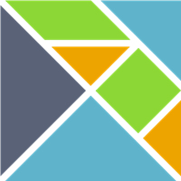
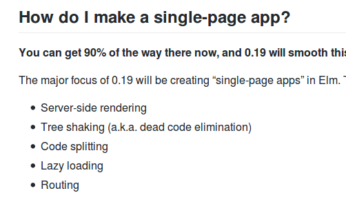
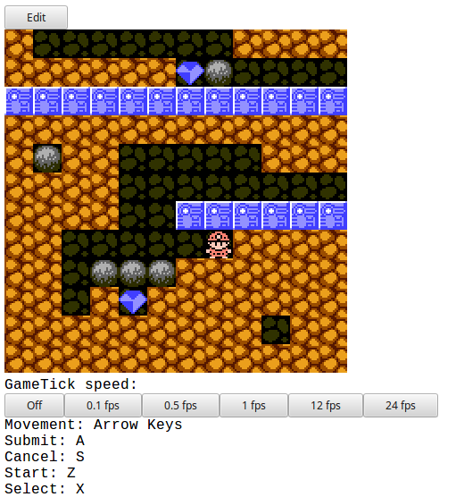
 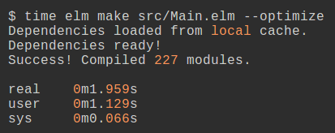
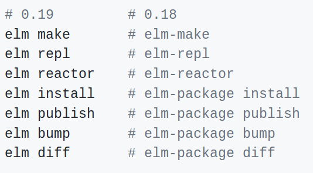
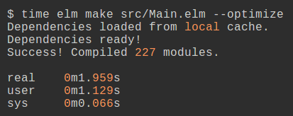
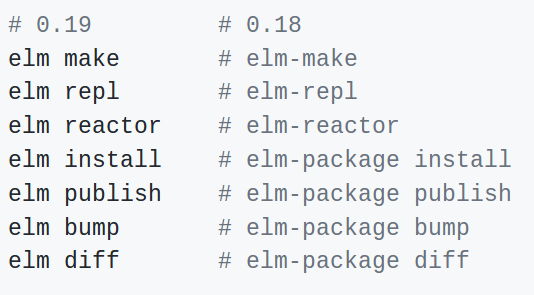
elm-package.json -> elm.json
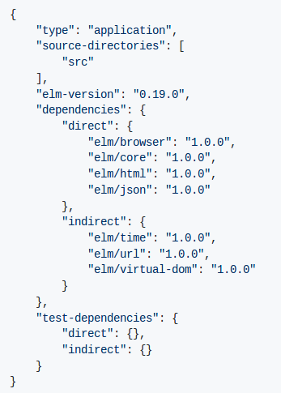
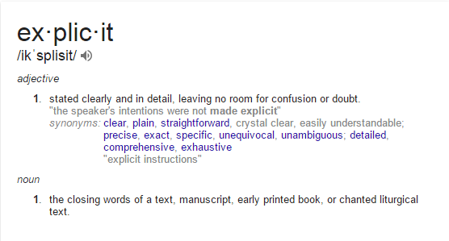
- % -> modBy
- Platform.Cmd.(!) -> (model, cmd)
- uncurry, curry, flip -> gone
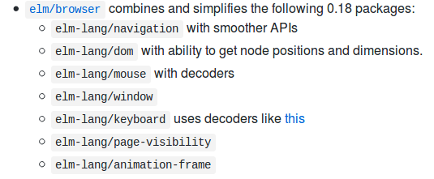

Elm:
- Is fast
- Small in size
- Friendly compiler
- Easy learning curve
- No runtime errors
- ------------------- +
- == awesome frontend language
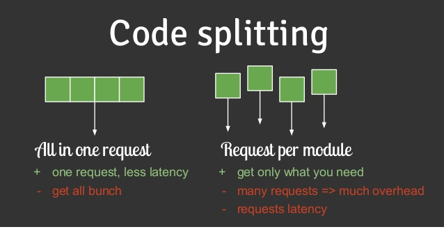
FAQ
- What will be the next version?
Probably 0.19.1 or 0.20
- When will it be released according to your predictions?
I don’t know, predicting stuff is tough